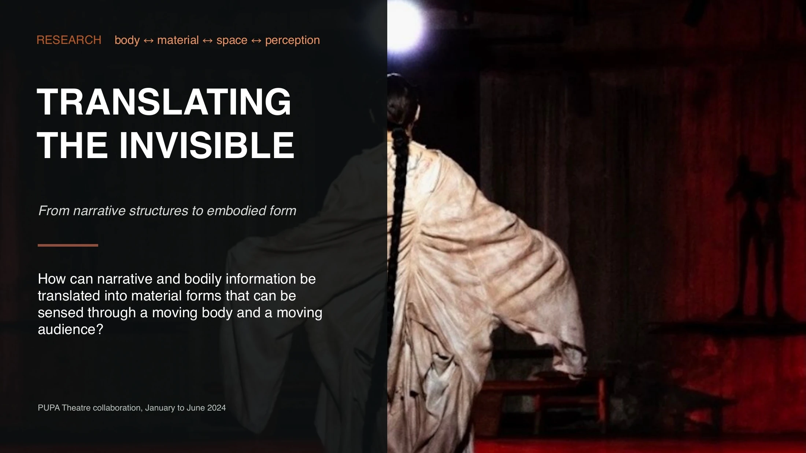

YUDI ZENG
I work where people, places, materials, and meanings meet.
Across different contexts, I make, observe, coordinate, and research—following what changes when an assumption meets the reality around it.
INDEX / SELECTED PRACTICE
Selected projects
Each project begins in a different context and takes a different form. Across them, I examine how people make sense of situations and act within the conditions around them.
 COORDINATIONUrban Micro-Ecosystem GovernanceProperty safety dispute · Resident coordination
Civic system ↗
02
COORDINATIONUrban Micro-Ecosystem GovernanceProperty safety dispute · Resident coordination
Civic system ↗
02 INTERDEPENDENCEFrom Space to SystemBranding · Circular design and independent operations
Operational system ↗
03
INTERDEPENDENCEFrom Space to SystemBranding · Circular design and independent operations
Operational system ↗
03
TRANSLATIONTranslating the InvisibleCostume Design · Visual Direction Embodied practice ↗ 04 INTERPRETATIONBefore You KnowHuman–AI interaction · Exploratory pilot
Research dossier · Study 0B ↗
INTERPRETATIONBefore You KnowHuman–AI interaction · Exploratory pilot
Research dossier · Study 0B ↗
ABOUT
PROFILE
POSITION
A design-trained practitioner and independent researcher exploring how people make sense of situations and act within the social, material, and technological conditions around them.
WHY THIS PRACTICE
Moving across cultural, material, institutional, and technological settings has made me attentive to how the same situation can be understood differently depending on who holds information, authority, responsibility, or room to act.
HOW I WORK
Observe before judging. I map how people in different positions understand the same situation before deciding what the problem is.
Work from real constraints. I begin with the resources, relationships, and limits already present rather than assuming ideal conditions.
Recalibrate through use. I allow evidence, embodied response, disruption, and dialogue to change the next move.
CURRENT DIRECTION
Currently exploring: AI-mediated interpretation, human agency, systems under uncertainty, and practice-based research.